asyncio
00 - Introdução ao módulo asyncio
Concorrência x Paralelismo
Concorrência

Uma máquina de café para duas filas
Paralelismo

Uma máquina de café para cada filas
Porque não usar Threads então?
GIL
Global Interpreter Lock
